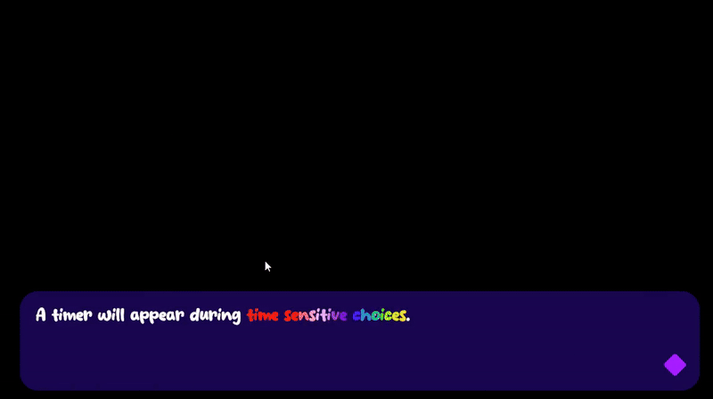
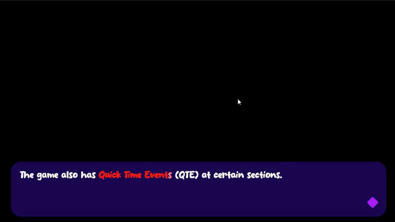

Description of project
This game was quite a passion project that me and my significant other made, them being the
Writer/Narrative Designer. The initial idea was that the story would be something silly and the game be
something simple and fun.
The game was primarily developed throughout the summer of 2025, but resumed development in January for
final polish.
System: Time-Sensitive Choices

Why this mechanic exists
- Discourages dialogue skimming and encourages engagement.
- Makes choices matter by putting them on a timer.
Tradeoffs
- No timer → Possibility of low engagement.
- Overly long timer → Risk of player skimming.
- Too short timer → Player frustration.
Final decision
- Timers appear when dialogue choices matter the most.
- If the player doesn't respond in time, the game makes the choice for them, reducing agency.
Expected outcome
- Encouraged attentive reading.
- Added tension and consequence to dialogue.
System: Quick Time Events (QTEs)

Why this mechanic exists
- Breaks up narrative flow with a different interactive challenge.
- Encourages attention to motor skills as well as reading.
How it works
- A cursor moves back and forth.
- The player must press a button when the cursor is within a target "sweet spot".
- Successful presses get harder over time (speed increases, window shrinks).
Expected outcome
- Adds variation in challenge.
- Reinforces embodied attention during important moments.
System: Levels Of Intoxication


Why this mechanic exists
- Narrative support! The player is drunk and their preception should reflect that.
How it works
- Uses a shader to distort visuals progressively.
- Intoxication changes with drinking or sobering up.
Expected outcome
- Visually communicates the state of the player without numbers.
- Altered perception links directly to the emotional and gameplay experience.
Design Goal
While I can appreciate visual novels to a certain point, I feel that they often turn into just that, a
visual novel...not a GAME. My design thinking ended up being boiled down to this:
The Problem
- Visual novels often become passive reading experiences (IMO).
- Traditional visual novels allow players to skim text and skip interaction with little consequence.
- Meaningful choices are uncommon, reducing attention investment.
The Objective
- Create a visual novel that feels like a game.
- Make reading active and engaging.
- Introduce mechanics that reinforce attention and consequence.
The Approach
- Mechanics should support narrative engagement, not distract from it.
- Players should not be feel like they are being punished arbitrarily.
Art & Presentation
- Used stock photos heavily edited in Photoshop.
- Faces were distorted to reflect intoxication and narrative tone.
Playtesting & Iteration
What was tested
- The impact of interaction mechanics on player engagement.
- Whether intoxication visuals were felt by players.
Feedback summary
- Early playtest showed intoxication effects were not obvious enough.
- Final playtest highlighted bugs in:
- Saving system
- Accessibility options
- Music
- Visual effects needed to be more pronounced.
Changes made
- Added Levels Of Intoxication system based on early feedback.
- Increased effect intensity of intoxication.
- Bug fixes based on later playtesting.
Summary of outcome
- Players appreciated added mechanics.
- Interact made narrative feel more engaging.
- Playtests revealed areas for improvement, especially tech and visuals.
Lessons learned
Programming
- Practiced making saving systems for the first time.
- Learned to make C# functions compatible with Yarnspinner scripts.
Design
- Challenged genre conventions of visual novels.
- Reinforced focus on narrative in mechanical choices.
Technical Growth
- Explored shaders with 2D elements in unity.
- Learned Photoshop techniques such as masking and other effects.